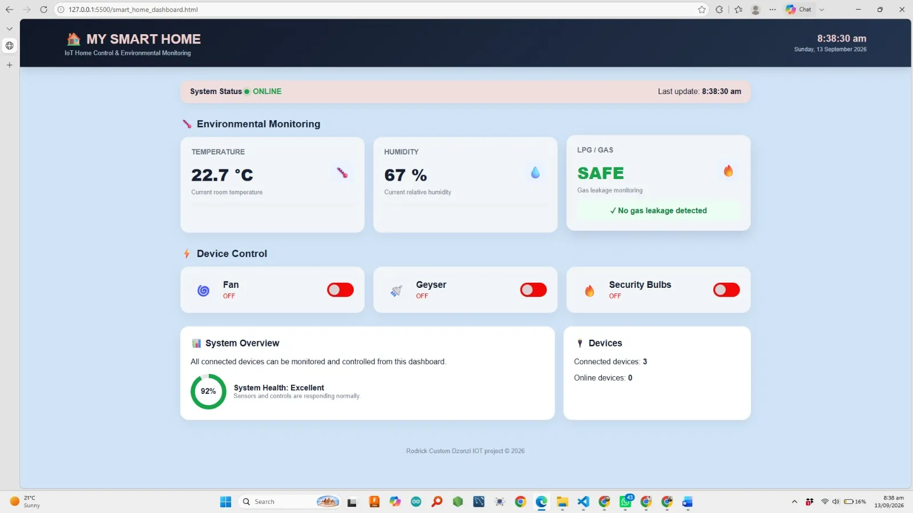

Embedded Systems Project
Smart House
An embedded home automation project developed to explore how sensors, control logic and electronic components can be combined to monitor and control household functions.

01 / Problem
The problem
Household systems often require users to control devices individually and manually. A smart house system provides a way to combine sensing and control so that different household functions can respond automatically to changing conditions.
This project was developed to explore how embedded systems can be used to monitor the home environment and automatically control connected devices.
02 / Contribution
What I worked on
I worked on connecting the electronic components, configuring the embedded controller and developing the control logic used by the system.
Sensor readings were used as inputs to determine how connected devices should respond. This gave me practical experience with sensor interfacing, digital input and output, control logic and integrating several electronic components into one system.
System Flow
How it works
03 / Tools
Tools & technologies
04 / Reflection
What I learned
The project helped me understand how sensing and control work together in an embedded system. It also gave me experience troubleshooting hardware connections and ensuring that software responds correctly to physical inputs.
If I extended the project, I would improve the system by adding more monitoring capabilities and a user interface for viewing and controlling the connected devices remotely.